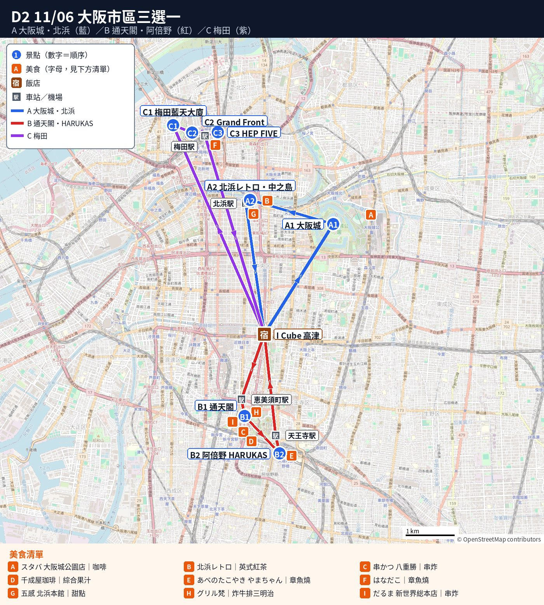
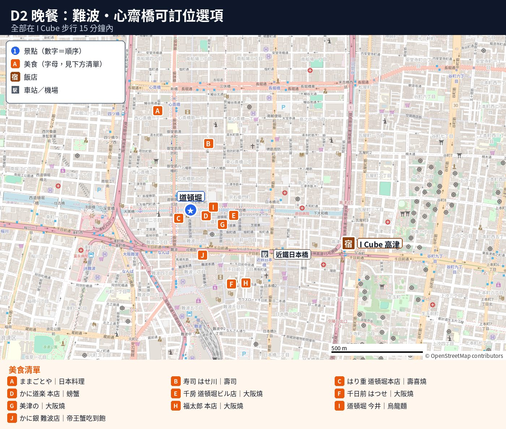

🏯 D2 11/06（五）｜大阪三選一（大阪城／新世界・HARUKAS／梅田）
Day 2 重點（11/06 週五，大阪市內放鬆日，三選一）
- A 大阪城＋北濱喝茶：坐園內小車少走路；北濱→日本橋 堺筋線直達回飯店。周遊卡價值約 ¥3,430／人（這是含御座船 ¥1,800 的算法；不坐御座船就不一定回本）。
- B 新世界・通天閣＋阿倍野 HARUKAS：離飯店最近，移動最短。周遊卡價值約 ¥2,100–2,900／人。
- C 梅田空中庭園＋HEP FIVE 摩天輪：景觀最好；去程建議坐車。周遊卡價值約 ¥3,480／人（空中庭園 15:00 前進場才免費）。
- ⏰ 時間：10:00 左右出門、16:00 左右回飯店。
- ☕ 休息：中間皆排咖啡店。
- 🚃 交通：週五地鐵 10 點前有通勤人潮。
- ⏰ 營業時間：北浜レトロ 11:00、千成屋珈琲 11:30 開。
📑 目錄（點開）
- 🗺️ 今日路線圖
- 📍 本日景點
- A 大阪城＋中之島・北濱喝茶
- 📍 10:30–12:30 大阪城天守閣（¥1,200，周遊卡免費）
- 📍 12:30–13:30 午餐（JO-TERRACE OSAKA）
- 📍 14:00–16:00 北濱喝茶＋中之島河邊散步
- B 新世界・通天閣＋阿倍野 HARUKAS
- 📍 10:15–11:30 通天閣展望台（¥1,500，周遊卡免費）
- 📍 11:30–12:45 新世界串炸午餐＋休息
- 📍 13:30–15:30 HARUKAS 300 展望台（¥2,200，周遊卡 9 折）
- C 梅田空中庭園＋Grand Front＋HEP FIVE
- 📍 10:30–12:00 空中庭園展望台（¥2,000，周遊卡免費）
- 📍 12:00–14:00 Grand Front Osaka 午餐＋休息
- 📍 14:15–15:00 HEP FIVE 摩天輪（¥1,000，周遊卡免費）
- 🍽️ 晚餐（3 個方案都一樣，回飯店休息後再出門）
- 📍 今日地點
- 🔗 來源
🗺️ 今日路線圖
圖例：藍圓＝景點（數字為順序）｜橘方＝美食｜連線只表示大概方向


地圖資料 © OpenStreetMap contributors
📍 本日景點（點卡片看詳細）
周遊卡（2 日券要連續 2 天）：建議用 D1（四）＋D2（五）。今天選 A 或 C 最划算（每人約 ¥3,430–3,480）；D1 選 A 版的話，兩天每人約省 ¥1,600。週六包車用不到。詳細看主頁「💰 周遊卡省多少」。
節奏評估：適中偏鬆（10:00 出門、約 16:00 回飯店，晚上回飯店休息後才吃晚餐；是 D1 之後的恢復日）
- 🚶 走路量：B 最少，A、C 中等。
- 🚶 減少步行：A 坐園內車，C 梅田去程坐車。
- 站立排隊：天守閣入口、北浜レトロ、通天閣換票、HARUKAS、串炸。
- 休息點：中途皆有咖啡店；摩天輪與御座船可坐著。
- ✂️ 可刪減：A 不走中之島；B 跳過通天閣；C 跳過中崎町或叫車。
- ➕ 可加碼：A 坐御座船；B 加慶沢園；16:00 後可加心齋橋或黑門市場。
A 大阪城＋中之島・北濱喝茶
🚃 10:00 飯店 → 谷町四丁目 → 大阪城
- 大眾運輸：🚶 約 13 分（飯店→谷町九丁目站 8 分＋谷町四丁目出站→大手前 5 分，估計）＋ 🚃 約 4 分（谷町線 2 站，直達）＋ 🚙 園內電動車約 10 分。地鐵 ¥190（估計）。
- 坐車：GO 大車或 2 台計程車到大阪城大手前，🚶 0 分＋🚕 約 10–15 分，大車約 ¥1,500–2,000（估計）。下車後再坐園內電動車。
- 園內小車（爸爸建議坐）：エレクトリックカー 大手前 → 豊國神社前，約每 10 分一班，大人 ¥300、65 歲以上 ¥200；ロードトレイン 森之宮／JO-TERRACE → 豊國神社前，約每 30 分一班，大人 ¥400。每月第 1 個週四休，雨天可能停駛（非官方整理，價格以現場為準）。
- Google Maps
📍 10:30–12:30 大阪城天守閣（¥1,200，周遊卡免費）
👉 詳細：📄 大阪城
- ⏰ 時間：停留約 2 小時。
- 👴 爸爸：電梯只到 5 樓，5 至 8 樓需爬梯。
- 👴 爸爸：爸爸可在 5 樓以下看展休息。
- 🚢 御座船：一到先換「指定班次」船票。
- 🚢 御座船：票滿即無法搭乘。
- 👴 爸爸：入口若排隊，爸爸先在旁坐等。
📍 12:30–13:30 午餐（JO-TERRACE OSAKA）
- 🍽️ 吃：餐廳多，位於 JR 大阪城公園站旁。
- 🚃 交通：可搭乘 ロードトレイン 前往。
- ⚠️ 提示：店家評分皆未達食べログ 3.5／Google 4.0。
- 💡 特點：作為「方便、有座位」的用餐選擇。
☕ 休息：📍スターバックス 大阪城公園店－平日 7:00–22:00，假日 8:00–22:00。
🚕 13:45 大阪城 → 北濱
- 坐車（建議）：🚶 約 3 分＋🚕 約 10–15 分，大車約 ¥1,500–2,000（估計）。
- 大眾運輸：🚶 約 15 分＋🚃 約 10 分（換車一次，比較累，不建議）。
📍 14:00–16:00 北濱喝茶＋中之島河邊散步
👉 詳細：📄 北濱・中之島
- ⏰ 時間：停留約 2 小時。
- ⏰ 時間：北浜レトロ平日 11:00 營業。
- ⚠️ 提醒：不能預約，可能需排隊。
- 🚶 路線：喝完沿河平路走至中之島公園，累了即回。
📍中之島公園
🚃 16:00 北濱 → 日本橋（回飯店）
- 大眾運輸：🚶 約 9 分（店→北濱站 2 分＋日本橋出站→飯店 7 分）＋ 🚃 約 6 分（堺筋線直達，不用換車）。¥240（估計）。
- 坐車：🚶 0 分＋🚕 約 15 分，大車約 ¥2,000–2,500（估計）。
- Google Maps
A 方案周遊卡：地鐵 ¥190＋¥240＋天守閣 ¥1,200＋御座船 ¥1,800 ＝ 約 ¥3,430／人（不坐御座船只有 ¥1,630）。
B 新世界・通天閣＋阿倍野 HARUKAS
🚃 10:00 飯店 → 惠美須町（新世界）
- 大眾運輸：🚶 約 10 分（飯店→日本橋站 7 分＋出站→通天閣 3 分）＋ 🚃 約 2 分（堺筋線 1 站）。¥190。
- 坐車：🚶 0 分＋🚕 約 10 分，大車約 ¥1,500–1,950（估計）。
- Google Maps
📍 10:15–11:30 通天閣展望台（¥1,500，周遊卡免費）
👉 詳細：📄 新世界・通天閣
- ⏰ 時間：停留約 1 小時 15 分。
- 🎫 門票：抵達後先現場換「入場時間預約券」。
📍 11:30–12:45 新世界串炸午餐＋休息
- ⏰ 時間：建議 11:30 前進店避開排隊。
🍽️ 午餐選擇（11/6 週五）
- 📍八重勝－新世界人氣串炸，食べログ 3.49、Google 4.0（約 3,800 則）。10:30–20:30，週四休（週五有開）。不能訂位，吧檯座位，常排隊。每人約 ¥2,000（估計）。
- 📍グリル梵 新世界本店－老洋食（炸牛排三明治），食べログ 3.59。每月 6、16、26 日休，11/6 剛好公休，這天不能去。
☕ 休息：📍千成屋珈琲－綜合果汁發源店，34 席，平日 11:30–19:00（週末 9:00 開）（官網）。
🚶 13:00 新世界 → 阿倍野 HARUKAS
- 走路：🚶 約 15–20 分（經天王寺公園「てんしば」，平路，估計）＋ 🚃 0 分。
- 地鐵：🚶 約 10 分＋🚃 約 2 分（御堂筋線 動物園前 → 天王寺 1 站）。¥190。
- 坐車：🚶 0 分＋🚕 約 5–10 分。HARUKAS 在阿倍野區，不在先前查到的 GO 大車名單內，App 叫不到就叫 2 台一般計程車。
📍 13:30–15:30 HARUKAS 300 展望台（¥2,200，周遊卡 9 折）
👉 詳細：📄 阿倍野 HARUKAS 300
- ⏰ 時間：停留約 2 小時。
- 🎫 門票：當日票在 16 樓購買。
- ⚠️ 提醒：人潮多時可能需抽整理券。
- 👴 爸爸：搭電梯直達 60 樓，步行少。
☕ 休息：📍SKY GARDEN 300（58 樓，可坐） - 選配（周遊卡免費）：慶沢園或天王寺動物園（走路較多）。
🚃 15:45 天王寺 → 谷町九丁目（回飯店）
- 大眾運輸：🚶 約 13 分（HARUKAS→天王寺站 5 分＋谷町九丁目出站→飯店 8 分）＋ 🚃 約 3 分（谷町線 2 站，直達）。¥190（估計）。
- 坐車：🚶 0 分＋🚕 約 10 分，約 ¥1,500–2,000（估計，2 台）。
- Google Maps
B 方案周遊卡：地鐵 ¥190×2＋通天閣 ¥1,500＋HARUKAS 9 折（省 ¥220）＝ 約 ¥2,100／人；加慶沢園 ¥2,400，加動物園 ¥2,900。
C 梅田空中庭園＋Grand Front＋HEP FIVE
🚕 10:00 飯店 → 梅田藍天大廈（梅田スカイビル）
- 坐車（建議）：🚶 0 分＋🚕 約 20–25 分，大車約 ¥2,800–3,800（估計）。直接到「タワーイースト」1 樓。
- 大眾運輸：🚶 約 25 分（飯店→日本橋站 7 分＋難波換線 5 分＋梅田→大廈 13 分，估計）＋ 🚃 約 15 分。¥240。梅田站很大，爸爸會很累。
- Google Maps
📍 10:30–12:00 空中庭園展望台（¥2,000，周遊卡免費）
👉 詳細：📄 梅田：空中庭園・Grand Front・HEP FIVE
- ⏰ 時間：停留約 1.5 小時。
- ⏰ 時間：周遊卡需 15:00 前進場才免費。
- 🚶 路線：從展望台專用入口進場。
- 👴 爸爸：搭東塔 1 樓高樓電梯直達 39 樓免爬梯。
☕ 休息：📍cafe SKY 40（40 樓，要展望台門票）
📍 12:00–14:00 Grand Front Osaka 午餐＋休息
- 🚶 步行：步行約 10 分至百貨（多為平路）。
- 🍽️ 吃：百貨內餐廳多且有座位。
- 💡 免走備選：下樓直在藍天大廈 B1 用餐。
🍽️ 📍きじ 梅田スカイビル店－大阪燒（モダン焼），食べログ 3.60。11:30–21:30，週四休（週五有開）。不能訂位，中午常排隊。每人約 ¥1,000–2,000。吃完再去 Grand Front 坐著休息。
📍 14:15–15:00 HEP FIVE 摩天輪（¥1,000，周遊卡免費）
- ⏰ 時間：停留約 45 分。
- 👴 爸爸：坐著賞景不費力。
- 🚶 步行：從 Grand Front 走來約 10 分需過馬路。
- ⚠️ 提示：中崎町老屋座位少且有梯，爸爸累則跳過。
🚃 15:15 東梅田 → 谷町九丁目（回飯店）
- 大眾運輸：🚶 約 13 分（HEP FIVE→東梅田站 5 分＋谷町九丁目出站→飯店 8 分，估計）＋ 🚃 約 12 分（谷町線直達，不用換車）。¥240（估計）。
- 坐車：🚶 0 分＋🚕 約 20–25 分，大車約 ¥2,800–3,800（估計）。
- Google Maps
C 方案周遊卡：地鐵 ¥240×2＋空中庭園 ¥2,000＋HEP FIVE ¥1,000 ＝ 約 ¥3,480／人（空中庭園要 15:00 前進場）。
🍽️ 晚餐（3 個方案都一樣，回飯店休息後再出門）
- ⏰ 時間：11/6 週五晚餐。
- 📍 地點：難波／道頓堀一帶，離飯店約 1 km。
- 👴 爸爸：若疲累建議直接叫 GO 計程車。
- 📍福太郎 本店－大阪燒，食べログ 3.69，百名店。平日 17:00 開到 23:30（料理 LO 22:45）。不能訂位，週五晚上會排隊，17:00 開門就去比較好。每人約 ¥1,500–3,000。
- 📍美津の－大阪燒老店，食べログ 3.56，百名店。11:00–22:00（LO 21:00），無休。每人約 ¥2,000–3,000。
- 📍道頓堀 今井 本店－烏龍麵、親子丼，食べログ 3.58。料理 LO 20:45，週三休。不想吃油的那天選這家。每人約 ¥1,000–2,000。
- D1 若已吃過其中一家，就換另一家。
🍽️ 可訂位晚餐備選（11/6 週五。都可以網路訂位、有座位，都在難波／道頓堀／心齋橋一帶（離飯店約 5–15 分）。11/03 查證，營業時間以店家為準。只能打電話訂的店已拿掉；評分低於 3.5 的有標出來）
🏮 在地人推薦（食べログ 3.5 以上）
- 📍ままごとや－季節日本料理（板前料理，約 70 道單點），食べログ 3.65。心齋橋站走約 2 分，在 5F。17:00–23:00（LO 22:00；週六到 22:30，LO 21:30），週日休。25 席：吧台 15 席（有椅子）、半包廂 2 間是掘りごたつ（要脫鞋）。每人約 ¥10,000–15,000（套餐 ¥12,000 起）。當天取消套餐收 100%。網路訂位：食べログ｜電話 06-6121-5077。
- 📍寿司 はせ川 心斎橋本店－壽司、日本料理，食べログ 3.52。在東心齋橋 4F。17:00–23:00（LO 22:00），不定休。84 席，有包廂（掘りごたつ 2 人起；桌椅包廂 4 人起，訂位時寫「テーブル個室希望」）。每人約 ¥15,000–20,000（套餐 ¥15,000 起，另加服務費 ¥1,200）。網路訂位：食べログ｜電話 06-6120-1600。
🏯 老舖／經典
- 📍はり重 道頓堀本店－すき焼き、しゃぶしゃぶ，食べログ 3.55（百名店 2026）。晚上 17:00–21:00（LO 20:00），週二休。200 席，有包廂；部分是榻榻米，訂位時寫「椅子席（テーブル席）希望」。每人約 ¥10,000–20,000（套餐 ¥9,900 起）。網路訂位：食べログ｜電話 06-6211-7777。
📸 網紅型／觀光名店
- 📍かに道楽 本店－螃蟹會席，道頓堀會動的大螃蟹招牌（觀光名店）。食べログ 3.42（低於 3.5）。11:00–22:00（最後入店 21:00），無休。300 席以上，有桌椅、包廂，窗邊可看道頓堀。套餐約 ¥6,600–13,200。網路訂位：Hot Pepper｜食べログ。
👨👩👧 家庭友善／平價
- 📍千房 道頓堀ビル店－大阪燒（店員在桌邊煎好，有「マヨビーム」擠美乃滋表演）。食べログ 3.25（低於 3.5）。11:00–23:00（LO 22:00），無休。120 席，有沙發席、掘りごたつ、吧台；店員幫忙煎，不用自己動手。每人約 ¥2,000–4,000（道頓堀焼 ¥1,480 起）。網路訂位：食べログ｜官網。
- 📍千日前 はつせ－大阪燒老店（1945 年開店），自己在桌上鐵板煎。Hot Pepper 4.1（1,242 則）；食べログ分數未查到。11:30–24:00（LO 23:00），無休。全部是包廂，但都是座敷（坐榻榻米，要脫鞋），爸爸膝蓋不好就不要選。每人約 ¥2,500–3,500（套餐 ¥3,300 起）。網路訂位：Hot Pepper（官網寫電話訂位，Hot Pepper 可網路訂）。
🦀 蟹（建議這晚吃）
- 🦀 想吃蟹吃到飽：看 📄 🦀 帝王蟹吃到飽評估（真帝王蟹、價格、時間比較）。
📍 今日地點
🏨 住宿：市區飯店（D1–D3；地址看訂房確認信）
| 名稱 | 類型 | 地圖 |
|---|---|---|
| 大阪城天守閣 | 景點 | 開啟 |
| スターバックス 大阪城公園店（JO-TERRACE） | 咖啡/甜點 | 開啟 |
| 通天閣 | 景點 | 開啟 |
| 千成屋珈琲 | 咖啡/甜點 | 開啟 |
| 北浜レトロ | 咖啡/甜點 | 開啟 |
| 中之島公園 | 景點 | 開啟 |
| あべのハルカス 展望台 | 景點 | 開啟 |
| 梅田スカイビル 空中庭園展望台 | 景點 | 開啟 |
| グランフロント大阪 | 購物 | 開啟 |
| HEP FIVE 観覧車 | 景點 | 開啟 |